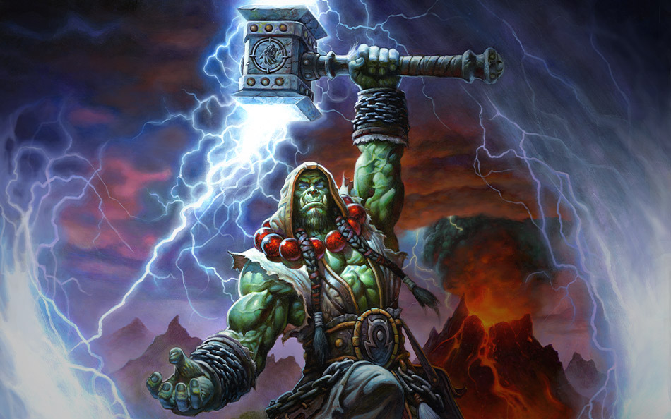

Thrall
Thrall, (llamado Go’el al nacer) hijo de Durotan, es el antiguo Jefe de Guerra de la restaurada Horda chamanística y fundador de la nación de Durotar en Kalimdor. Tras la caída del Rey Exánime y la creciente invasión elemental que culminó en el Cataclismo, Thrall dejó el puesto de líder de la Horda y se unió al Anillo de la Tierra para combatir con los furiosos elementales.
Es uno de los personajes más importantes del universo Warcraft, siendo fundamental en grandes eventos que moldearon la historia en Azeroth.
Tras la victoria en el monte Hyjal y la caída de la Legión, Thrall reunió a su gente, y encontró un lugar para su pueblo en las accidentadas y hermosas tierras de The Barren. Allí fundó Durotar, en honor a su padre Durotan Su capital fue Orgrimmar en honor a Orgrim Doomhammer. Después de varios meses, los orcos se quedaron en Durotar, los tauren se fueron a Mulgore, y los trolls a las costas de Islas del Eco.
Thrall conoció a Rexxar, un hijo de Mok’Nathal que había tratado de salvar a un explorador orco llamado Mogrin de un grupo de jabaespines, y traía el mensaje que este portaba. Thrall lo leyó cuidadosamente, entristecido por la muerte de Mogrin, y dio la bienvenida a Rexxar a la recién coronada tierra. Rexxar agradeció el ofrecimiento, pero dijo que tendría que ganárselo. Thrall aceptó, y envió a Rexxar a hablar con diversos ciudadanos de Orgrimmar y ver qué podía hacer para ayudarles en sus tareas.
También llamó a Rokhan, un shadow hunter troll para que ayudara a Rexxar al que se sumó más tarde a un maestro cervecero pandaren errante llamado Chen Stormstout, que andaba buscando ingredientes para su nueva invención. Tras la ayuda de Rexxar con los ingredientes, Chen se unió al troll y al Mok’Nathal, deseoso de aventura. Mientras, Thrall esperaba en Orgrimmar, ayudando a construir la ciudad.
Rexxar realizó sus obras con éxito, y Thrall comenzó a respetar al maestro de bestias. Pero pronto llegó la mala noticia de que los humanos se habían instalado en las orillas de Durotar. Thrall se preocupó, el trato que había pactado con Jaina le había proporcionado seguridad para no ser atacado pero después de varios encontronazos con humanos hostiles, se organizó una reunión entre Thrall y Jaina. Rexxar, oliéndose algún tipo de trampa, se ofreció a ir en lugar de Thrall. Finalmente todo resultó una farsa y lo que los emisarios humanos pretendían no era hablar sino matar a Thrall. Rexxar se encargó de ellos y regresó a Orgrimmar para informar al jefe de la Horda.
Incapaz de concebir que Jaina lo hubiera traicionado, Thrall escribió una carta para que Rexxar la llevara a Theramore, con la intención de reunirse con Jaina. Sólo cara a cara podría estar seguro que se llegaría a un acuerdo que garantizara la paz entre las dos razas.
Después de oir las noticias que Rexxar traía de parte del Daelin Proudmoore, el padre de Jaina, Thrall se dio cuenta que la única forma de evitar otra guerra era asaltar la base del almirante y matarlo. Con la ayuda de Rexxar, Thrall solicitó la ayuda de de su viejo amigo Cairne y los tauren, asi como los ogros quebrantarrocas de Stonemaul.
Mientras preparaban el asalto a Theramore, Thrall fue informado de la presencia de barcos que bloqueaban cualquier acceso a la isla. Su frustración fue interrumpida por Jaina que se teletransportó al lugar, asegurando a todos que venía en son de paz. Jaina dijo desconocer los planes de su padre y se mostró escéptica ante el callejón sin salida en que se encontraba. Thrall le confesó que las acciones de su padre podrían destruir Durotar y que la única forma de garantizar la seguridad de la nueva nación era matándolo.
Jaina comprendió la situación y expresó su deseo de ayudar, aunque eso conllevara la muerte de su padre. Le dio a Thrall indicaciones para llegar a un astillero goblin cercano que le podía proporcionar buques para destruir los barcos que bloqueaban la isla. Suplicó a Thrall que no dañara a sus hombres que solo seguían las instrucciones del Almirante, y que eran la única familia que había tenido después de la caída de Lordaeron. Thrall dio su palabra de que intentaría minimizar el derramamiento de sangre y aconsejó a Jaina que buscara un lugar donde ponerse a salvo cuando empezara la batalla.
Usando los barcos adquiridos de los goblins, las fuerzas de Thrall lograron abrirse camino hasta la isla, donde se prepararon para enfrentarse a las fuerzas del Almirante. Rexxar, Rokhan, Chen y Cairne, lucharon directamente contra el almirante Daelin y al final lograron vencerlo. Antes de la batalla, Thrall trató de convencer al Almirante de que esta Horda, era diferente a la que hubo años atrás durante las dos guerras con los humanos, que no tenían ningún interés en la conquista ni en el asesinato. Proudmoore acusó a la raza de Thrall de genocidio, y de que nunca podría borrar las muertes que dejaron tras su asalto a Stormwind y Lordaeron. Confesó que nunca dejaría de luchar contra los orcos por lo que Rexxar, tal y como Thrall había predicho, se vio obligado a matarlo.
Tan pronto como cayó Daelin Proudmoore, Rexxar proclamó que la batalla había terminado y ordenó a los humanos que depusieran sus armas. Jaina se arrodilló cerca al cuerpo de su padre tristemente preguntando por qué no la había escuchado. Rexxar intentando consolar el dolor de la hechicera, diciéndole que su padre fue un orgulloso guerrero por encima de todo y que debía ser recordado como tal. Thrall anunció que la Horda respetaría a los supervivientes humanos y que él y su ejército abandonarían pacíficamente Theramore. Dicho y hecho, sus tropas se encaminaron de regresó a Durotar, dejando a Jaina guardar duelo por la muerte de su padre.
Agradeciendo a Rexxar por todo lo que había hecho, Thrall le ofreció un lugar para establecerse permanentemente en Durotar, a lo que el semiogro educamente declinó. Rexxar poseía un carácter errante y su sitio no estaba tras los muros de una ciudad sino junto a la vida salvaje. Prometió a Thrall responder a la llamada de la Horda, siempre que necesitara de su ayuda y se despidió mientras la construcción de Orgrimmar seguía su curso. Por el momento todo iba bien.
